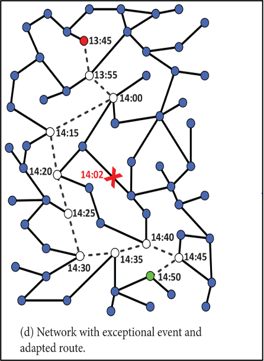
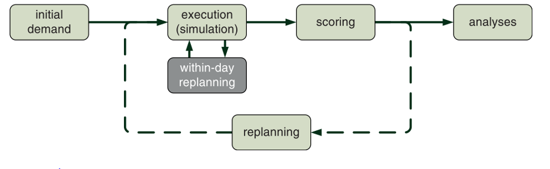
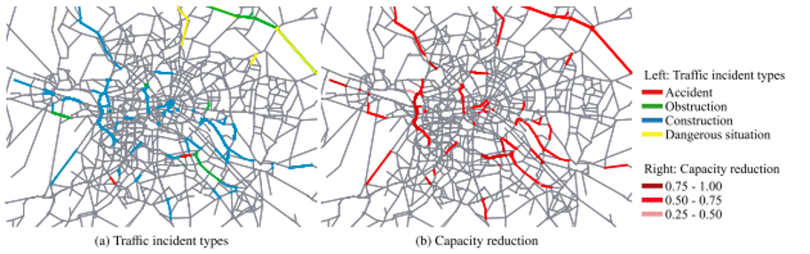

2 Literature Review
Traffic incident managment in general — and IMT in particular — are not strictly new innovations. The Federal Highway Administration (FHWA) publishes the Traffic Incident Management Handbook (FHWA, 2000) which defines traffic incident management as:
The systematic, planned, and coordinated use of human, institutional, mechanical, and technical resources to reduce the duration and impact of incidents and improve the safety of motorists, crash victims, and incident responders. (p. 1-1)
The handbook details the process of how to implement a traffic incident management program as well as improve it. The manual covers various aspects of incident management, including the responsibilities of emergency medical teams, law enforcement, and other responding entities. For this research, we focus on the dedicated traffic incident management teams operated by departments of transportation or similar agencies and not other types of first responders.
The FHWA has established performance measures to develop a framework to quantify improvements to IMT operations and traffic (FHWA, 2000). Two specific measures related to this research are: first, roadway clearance time (RCT) is the time between the first recordable awareness of the incident to the time all lanes open for traffic flow; second, incident clearance time (ICT) is the time between the first recordable awareness of the incident and when the last responder has left the scene.
There is substantial evidence from numerous studies demonstrating the positive influence of TIM programs on traffic conditions, often measured using FHWA or similar performance indicators. One study of note, by (Schultz et al. 2019-04-01, 2019-04), highlights the substantial benefits of IMT implementations. The study took advantage of the interconnected data used by UDOT and the Utah Highway Patrol to estimate the reduction in traffic resulting from the rapid response of IMT units at crash sites. The findings were compelling: the deployment of IMT units notably decreased excess travel time, alleviated the user costs associated with congestion, and effectively reduced the volume of traffic affected by an incident BY HOW MUCH.
Kim et al. (2012-04-01, 2012-04), in a study of Maryland’s Coordinated Highways Action Response Team (CHART) operations, devised a model using CHART’s data to compute the costs associated with traffic delay. The team established a marginal cost-to-benefit ratio to discern the ideal fleet size. They first estimated the reduction in traffic delay under various highway response unit strategies. Subsequently, they calculated the costs of fuel consumption, emissions, and delay times and converted these into monetary values. These figures were then multiplied by the delay’s duration to obtain the traffic delay’s marginal costs. The research determined that each additional unit added provided a greater benefit than its associated cost until seven highway response units were deployed. This finding implies that while there is a significant cost-to-benefit ratio with the optimal number of response teams, the benefit diminishes when adding too many teams. Determining the ideal number of teams is a function of budget, network size, and incident frequency.
Skabardonis (1998) concluded in a study of the California Freeway Service Patrol (FSP) IMT service that, on average, total incident response time was 15 minutes longer when California Highway Patrol (CHP) units responded without the support of FSP units. Using a system to assign a cost per traveler per unit of time to vehicles in the observed area, the authors determined FSP units had a cost-to-benefit ratio of 5:1. They also concluded that CHP officers spent less time on incidents (including vehicle breakdowns).
2.1 IMT Optimization
Given the compelling evidence that IMT programs improve traffic conditions and reduce costs for government entities and individuals, it becomes paramount to further research avenues to maximize these benefits. One effective strategy is the strategic placement of IMT units, optimizing their spatial effectiveness to enhance their impact.
Enhancing IMT programs often focus on the precise deployment of individual trucks and the strategic positioning of IMT depots—locations where inactive trucks await dispatch. For scenarios where IMT vehicles are actively on patrol, research often concerns designing an efficient service area or “beat.” Various methodologies have been applied to tackle this allocation challenge. While some studies employ statistical models, incorporating a range of variables to maximize specific performance measures given constraints, others opt for digital modeling as a solution.
For instance, @lou2011 explored strategies aimed at minimizing IMT response time. They developed a mixed-integer nonlinear optimization model and proposed different algorithms to address this problem. The research modeled IMT units as roaming entities within specific freeway sections, aiming to determine the optimal unit locations for minimizing response times. Incident frequencies were generated randomly on the network, given mean and standard deviations of incident occurrence on each link in the network. The study focused on developing and optimizing these algorithms for broad implementation rather than focusing on any particular network or reducing response times in specific areas. They implemented a template “Sioux Falls” network into the model as a practical demonstration. Compared to the existing deployment plan in Sioux Falls, the algorithm-generated plans could potentially reduce total response time by 16.5-20.8%.
Ozbay et al. (2013-03-01, 2013-03) developed a model that provides information on resource allocation between “depots” or the staging areas of IMT units. A mixed-integer programming model with probabilistic constraints was developed in this research to approach the problem of IMT allocation within the various depots. Given that the probability of incident types on a network is known, IMT units are allocated to the incident scene, considering the future probabilities of incidents on the network. The model’s objective is to minimize incident management costs while maximizing utility. The function is applied to a simplified South Jersey Highway network model to demonstrate the implementation of the model in IMT decision-making. Distribution of demand is based on traffic incident data from South New Jersey. In the test results, a number of depots and trucks assigned to each depot was found given a budget of $500,000 for the whole program. No comparison to existing depot and unit distribution was made; therefore, improvement because of the model was not quantified.
In his work, @ozbay2013 developed a model to inform resource allocation across New Jersey “depots,” the designated staging areas for IMT units. This research employed a mixed-integer programming model with probabilistic constraints to address the challenge of IMT allocation within these depots. With known probabilities of different types of incidents occurring on a network, IMT units were strategically allocated to incident scenes while considering future probabilities of incidents on the same network. The goal of his model was twofold: to minimize incident management costs and to maximize utility. To demonstrate the model’s practical applicability in IMT decision-making, it was implemented on a simplified South Jersey Highway network model. The model’s demand distribution was based on traffic incident data from South New Jersey. The test results established an optimal number of depots and trucks assigned to each depot, given a program budget of $500,000. However, as no comparison was made to the existing depot and unit distribution, the precise improvement attributable to the model was not quantified.
Digital models of IMTs have been developed in the past with various software packages. @pal2002 developed a digital model to replicate IMT impacts on traffic conditions. Overall traffic time in the system was used as the performance indicator of the units. The software program was developed from scratch as existing programs at the time used in mesoscopic traffic simulation could not simulate incident response units. Various configurations of response vehicles were simulated using probability distributions of crash data, vehicle speed, and carrying capacity. Given the study results, suggestions were made regarding fleet size, hours of operation, patrol area design, and improvements regarding the dispatching policy.
These models, whether simulations or optimization problems, have been effective for what they were, but they fail to replicate real-world scenarios in the way that a MATSim simulation can. Simulations like MATSim provide the opportunity to incorporate real-world data and create more realistic networks and model drivers with tools like within-day replanning, which will be discussed in later chapters.
An important consideration in determining the optimal location for the IMT units to be stationed is the metric by which the IMT is judged. The FHWA has established performance measures by which IMTs were evaluated; however, some researchers have felt that other metrics proved helpful in specific scenarios. Pal and Sinha (2002) use a metric of total traffic time to analyze the model. Total traffic time is a practical approach as traffic slowdowns incur financial costs and other burdens on the individual and community (Bivina, Landge, and Kumar 2016-01-01, 2016-01). An economic cost-based model is implemented in some research on incident management programs. Kim et al. (2012-04-01, 2012-04) use assumed values of fuel price and pollution externalities gathered from previous research to assign a monetary value to consequences of traffic delay in time and environmental costs. The study focuses on optimizing IMT programs in general based on specific budgets. Kim and Chang do not implement IMT units directly in their traffic simulation. The total traffic time and financial costs are similar in their fundamental nature in that financial costs are a function of the traffic delay. From another perspective, Ozbay et al. (2013-03-01, 2013-03) developed a statistical model where the costs associated with response times are minimized to meet budget constraints. Deciding what factors are most important to measure in the traffic simulation, like costs or response time, will help the decision-making process behind IMT allocation.
2.2 Incident Modeling
As outlined in the preceding section, previous attempts to understand optimal IMT deployment have been primarily based on ad-hoc models, specially constructed utility functions, or similar stand-alone efforts. Rarely has there been an explicit attempt to model traffic delay associated with incident management, at least partially because research modeling the effects of incidents on region-scale traffic networks is a recent innovation.
Traffic models are based on static assignment, dynamic assignment, or sometimes a combination of both. Static traffic assignment (STA) and dynamic traffic assignment (DTA) make the same behavioral assumption: drivers want to reach their destination in the shortest time possible. A static model achieves optimization by calculating route travel times, finding the shortest path, and adjusting routes toward equilibrium. The issue with static models is that they assume that all vehicles experience the same delay – in particular, traffic flow is anisotropic and obeys causality (Boyles 2018-01-22, 2018-01).
Dynamic modeling also aims to achieve equilibrium through route choice. Dynamic modeling shows how congestion varies over time, and it bases equilibration on experienced travel times, not instantaneous travel times. According to Boyles (2018-01-22, 2018-01), “DTA is best applied when the input data are known with high certainty, only a few scenarios are needed, and detailed congestion and queueing information are critical” (Boyles 2018-01-22, 2018-01, 28). A study on the effects of congestion conducted by @sisiopiku2007 highlighted the applications of simulation-based DTA modeling on incident management. Her study argues that dynamic assignment is preferred over static when considering incident modeling. Sisiopiku describes her methodology as follows:
The overall approach in this study is to use the DTA capabilities to support decision-making for incident management. Unlike static assignment methods, which are based on average daily traffic and fail to capture the dynamic process of an incident, DTA is particularly appropriate for studying short-term planning applications such as evaluating various incident management options (p. 111).
In this study, Sisiopiku used a simulation-based DTA model to assess the impacts of designed incident scenarios. She evaluated the effectiveness of candidate incident management plans and the impacts of traffic operations and control strategies for the analysis period.
Sisiopiku initially conducted a base scenario under non-incidental conditions, which served as a benchmark for comparison. The follow-up scenario introduced an incident simulation, with the key caveat that drivers were kept uninformed about the incident. The duration and severity of the incidents were manipulated between different iterations of this second scenario. The third scenario mirrored the second but introduced information provision to the drivers. In this scenario, drivers were empowered to optimize their route through the incident zone and given access to information about pre-planned diversion paths. This information was relayed to the drivers through Variable Message Signs (VMS) strategically positioned upstream of decision points, as detailed in Sisiopiku’s 2007 study.
The scenarios Sisopiku ran in Birmingham and Chicago revealed that travel time savings and traffic delay reduction could be achieved if information was provided to the agents following an incident. The study also shows how a simulation-based DTA model can simulate the impact of incidents on congestion and the impacts of different traffic operation and control strategies. The DTA tool Sisiopiku uses is known as Visual Interactive System for Transport Algorithms or VISTA, a tool commonly used in traffic modeling.
Echoing Sisiopiku’s usage of VISTA, Wirtz, Schofer, and Schulz (2005-01-01, 2005-01) also undertook an in-depth analysis of this tool in his 2005 traffic incident simulation study. Wirtz elaborated on the limitations of both VISTA and DTA systems. As part of their route adjustment towards equilibrium, these systems presume all drivers possess flawless travel time information for routing to the user-optimal path. For instance, Sisiopiku, in her 2007 study, presumed a 100% compliance rate for the diversion routes provided to the drivers in her model. The validity of this assumption of perfect travel time information is partially contingent on the communication medium—radio traffic reports, the internet, or VMS. Wirtz’s 2005 study revealed that “less-informed drivers spend more time traveling than necessary, representing a departure from the user-optimal traffic conditions simulated by VISTA.” With the advancements in personal GPS information and its increased accessibility, drivers are more likely to identify an optimal path post-incident. Acknowledging that the assumptions embedded in a model, along with its scope and scale, significantly influence its functionality is critical.
DTA models generally fall into two camps: microscopic and mesoscopic. Microscopic models run on small scales and track the trajectories of individuals. In contrast, mesoscopic models are more aggregated and simplify variations in behavior; they involve elements of both static modeling and dynamic microscopic models (Boyles 2018-01-22, 2018-01). The level of detail in microscopic models makes them highly realistic but impractical for modeling large regions. A mesoscopic model that shows the paths of individual vehicles but ignores traffic flow issues like turn conflicts and lane changes would work well for modeling traffic flow over a greater area (Boyles 2018-01-22, 2018-01).
VISTA is an example of a mesoscopic model which showcases DTA’s capability for incident modeling. Microscopic models, like VISSIM, can also be used for incident modeling. Microscopic models can track precise locations of vehicles, driver behavior, and even vehicle characteristics; this makes the models extraordinarily realistic but impractical for modeling large regions (Boyles 2018-01-22, 2018-01). In Australia, @dia2006 used VISSIM to evaluate incident management impacts on two arterial routes (Coronation Drive and Milton Road) connecting the western suburbs of Brisbane and the Central Business District. Another framework used for incident modeling is the traffic simulator JDSMART. This model was used by van Lint et al. (2012-01-01, 2012-01) for incident simulation and to study how roadway policies influence congestion.
MATSim, the Multi-Agent Transport Simulation Toolkit, has recently gained recognition as a helpful software for incident modeling, demonstrating a capacity for producing microscopic and mesoscopic models. Operating as an open-source framework, MATSim is designed to implement large-scale agent-based transport simulations. Using a mesoscopic queue-based strategy, agents representing individuals seek the shortest routes connecting their activities.
In his 2016 chapter of the MATSim manual, Dobler and Nagel (2016) emphasized the necessity and application of a within-day replanning tool within the MATSim context. He elaborated that while MATSim’s iterative modeling approach fares well under ideal conditions and in achieving user equilibrium, it falls short when dealing with unexpected occurrences. This deficiency manifests as illogical behavior, such as pre-emptive route changes before the incident’s actual occurrence. For example, Figure 1 illustrates a MATSim routing problem featuring within-day replanning. It depicts an agent (a simulated individual) navigating from the red dot to the green dot. A crash ensues along the agent’s assigned route at 14:02. Due to the iterative approach; however, the agent switches to a different route at 14:00, two minutes before the crash. This inconsistency exposes the limitations of an iterative approach in modeling unanticipated behavior, underscoring the need for a within-day replanning method, which utilizes a single iteration for replanning rather than multiple.

While iterative systems leverage best-response modules, within-day systems necessitate using a best-guess module. This approach means that travel times can be optimized to a stable state with an iterative approach, but this is not the case with a within-day approach. An inherent attribute of within-day replanning is that it doesn’t converge to a user equilibrium, unlike an iterative process. Decisions, appearing optimal in the heat of the moment, often reveal themselves as suboptimal upon retrospective evaluation. Given the limited information available to the agents in a within-day system, they may not necessarily choose the path with the shortest travel time post-incident, as discussed by Dobler in 2016.
Replanning contains two categories: replanning an element of the activity and executing the replanned elements. Elements include the start and end times of the trip, the trip’s location, route, mode choice, or the dropping of a trip entirely. The system can execute plans for in-the-moment events or those performed in the future. In a presently performed procedure, we cannot conduct all replanning actions (e.g., we can no longer alter the start time of an activity or the transport mode of a trip currently being performed) (Dobler and Nagel 2016). Figure 2: Iterative and within-day replanning MATSim loop. illustrates where within-day replanning fits within a MATSim loop.

An alternative to iterative or within-day replanning only approaches is to combine them. For example, we cannot plan situations like parking or car-sharing thoroughly, requiring iterative and within-day replanning methods. An agent can arrange a parking activity but cannot predict which parking spots will be available when they arrive. Thus, we use within-day replanning when the agent starts their parking choice.
In general, within-day or en-route replanning means that travelers replan during the day or on their route, which means that the simulation needs to influence the agent while the network is running. (dobler2016explains?) that we influence agents’ decisions through loops or by having users’ routes dependent on the next link that they choose. Because going through all links and nodes at every step would be computationally challenging, we may set certain links to be non- active and removed from the computation (Dobler and Nagel 2016). The two implementation methods Dobler described are plan-based implementation and replacing the agent.
In a plan-based implementation, a loop is used where each agent has the chance to deliberate in every time step. The agent can decide that they have nothing to deliberate and return immediately. Because the number of links is typically much smaller than the number of agents in a scenario, massive optimization is necessary to make the loop computationally efficient. For this reason, we could ask each agent to choose a link only when they need to make a decision.
Such event-driven planning requires the agents to be re-programmed to have enough capabilities to be oriented about themselves (i.e., be able to compute plausible routes). Agents will only need to perform such computation when replanning is triggered by an event like an emergency warning or unexpected congestion; otherwise, they will follow their usual daily plans.
Re-programing agents and implementing within-day replanning, as shown in Figure 2: Iterative and within-day replanning MATSim loop., requires the implantation of a MobsimEngine, which can be plugged into the mobility simulator seen in the execution phase of Figure 2: Iterative and within-day replanning MATSim loop (Axhausen, Horni, and Nagel 2016-08-10, 2016-08). Dobler and Nagel (2016) describes it this way, “in every simulated time step, the QSim iterates over all registered MobsimEngines and allows them to simulate the current time step. Besides simulation of the traffic flows, those engines can also let agents start or end activities” (Dobler and Nagel 2016, 193). The engines contain within-day replanning logic called WithinDayEngine, which helps track agents and adapt their plans (Dobler and Nagel 2016). Not all agents need to compute plausible routes at every turn, so an AgentSelector is used to select the agents to be replanned. AgentFilters assist them in narrowing the search population (Dobler and Nagel 2016). Lastly, TravelTimeCollectors are part of the WithinDayEngine and provide actual link travel times to the replanners by collecting and averaging travel times of agents that have recently passed a link during a given time (Dobler and Nagel 2016). The elements described above make up the plan-based system.
A significant incident modeling, plan-based system study used MATSim to simulate traffic incidents (Kaddoura and Nagel 2018-01-01, 2018-01). Their research explains that MATSim models transport users as individual agents. MATSim is iterative and allows users to adjust travel plans during a single iteration, from iteration to iteration, or both (Kaddoura and Nagel 2018-01-01, 2018-01). Kaddoura and Nagel accessed their incident data via the HERE application programming interface for traffic incidents. This incident data included Traffic Message Channel (TMC) information indicating an incident’s cause and severity. With such robust data, Kaddoura and Nagel could categorize incidents as long or short-term and model each accordingly in MATSim. Long-term effects include multiple-day lane closures, whereas short-term incidents affect transport supply for less than a day. Their simulation was based on an inner-city network in Berlin, Germany. Figure 3: Traffic incidents mapped on the Berlin network illustrates the type of incidents modeled and their severity. In this example, a crash on the southern inner-city motorway ring road led to a full road closure, and several construction sites caused partial capacity reductions.

Kaddoura and Nagel (2018-01-01, 2018-01) found that long-term traffic incidents increase traffic congestion and the average car travel time by 313 sec (+18%) per trip. Short-term traffic incidents increase the average travel time per car trip by another 136 sec (+8%). Additionally, they found that for 44% of all car trips, the agent’s transport route contained at least one road segment for which the capacity or speed limit was reduced because of an incident. Their study concluded that networks in which transport users had high levels of knowledge about the incidents and resulting traffic congestion still experienced an increase in travel time caused by long and short-term incidents. Finally, Kaddoura and Nagel asserted that “accounting for traffic incidents makes the model more realistic, allowing for an improved policy investigation” (Kaddoura and Nagel 2018-01-01, 2018-01, 885). The modeling performed by Kaddoura and Nagel is just one example of research on MATSim’s capacity for incident-based simulations.
A MATSim model developed by Li and Ferguson (2020-01-01, 2020-01) included a range of rescheduling options, such as departure time, mode choice, and trip cancellation. Their simulation found that if travelers received notice of an incident, they would either depart early from their place of origin or switch to public transport (Li and Ferguson 2020-01-01, 2020-01). The process proposed by Li and Ferguson is beneficial because it allows agents to reassess their mode choice or route assignment based on the notice of a reported incident. Li and Ferguson show that users care about total travel time and travel time variability (risk tolerance to a certain degree). The receiving of notifications about incidents by agents impacted both factors. They concluded that “the provision of real-time traffic information is a useful approach to mitigating the side-effects of incidents through helping transport users efficiently adapt their day plans” (Li and Ferguson 2020-01-01, 2020-01, 96).
Additionally, they found that “most of the travelers notified of being affected by incidents are simulated to depart early or switch to public transport, which effectively reduces the average travel time delay caused by disruptions” (Li and Ferguson 2020-01-01, 2020-01, 96). Their findings validate the conclusions of @sisiopiku2007 that making incident information available to agents leads to decreases in travel time and congestion. Like the studies already mentioned, there have been various modifications to and research on MATSim and its capacity.
In Thailand’s capital, Bangkok, a study conducted by Peungnumsai et al. (2019) demonstrated the potency of the MATSim framework in portraying the impact of rush hour congestion on select traffic links. Peungnumsai ran various simulation iterations, loading the selected links with a different number of agents: 10, 100, and 500. The data collected and the subsequent analysis substantiated MATSim’s capability to demonstrate the congestion-induced variations in travel time. Furthermore, it was observed that as the number of agents in the simulation increased, there was a proportional surge in computing time, physical memory usage, and the size of the output file. Despite the scale of these simulations being relatively small, MATSim has the capacity to simulate up to 10-100 million agents, encompassing various modes of transportation like bicycles, motorbikes, cars, buses, and taxis (Peungnumsai et al. 2019).
In a contrasting study conducted in Copenhagen, Denmark, Paulsen, Rasmussen, and Nielsen (2018) utilized MATSim to contrast the reliability of automobile and railway travel times. His methodology involved using an extension of MATSim centered around an event-based public transport router, which facilitates optimal route selection for public transport users by comparing the effectiveness of routes over several iterations. Paulsen’s simulation of travel times for both cars and trains yielded an interesting finding: passenger delays were significantly influenced by the adaptiveness of their chosen routes. However, he noted that passenger travel times tended to be more unpredictable than trains, and this unpredictability escalated with the degree of route adaptiveness. He concluded that the adaptiveness of route selection contributed to significant travel time fluctuations, a conclusion that aligns with the findings of Li and Ferguson (2020-01-01, 2020-01).
In essence, the studies encapsulated in Section 2.3 validate the effectiveness of the open-source software MATSim, in simulating traffic incidents, congestion, and travel times. This evidence accentuates how the proper application of MATSim or similar Dynamic Traffic Assignment (DTA) models can account for traffic incidents, thereby enhancing the realism of the models. This type of model, in turn, can facilitate more effective policy investigation, as noted by Kaddoura and Nagel (2018-01-01, 2018-01).
2.3 Summary
As explained in this section there has been extensive research into IMT effectiveness and its ability to restore traffic flow following long- and short-term disturbances. Additionally, several studies have examined how to effectively model traffic incidents and show their impact on travel time, congestion, and mode choice. However, in these vast arrays of findings, there is a gap in research on modeling IMT effectiveness and incident impact on a loaded with realistic agents. As a result, it is difficult for researchers to understand how changes to incident generation or to IMT availability may impact traffic conditions, for good or for bad. In this research, we seek to bring these two strands together, attempting to model incident response in a microsimulation framework to bring realism and detail to the IMT deployment question.